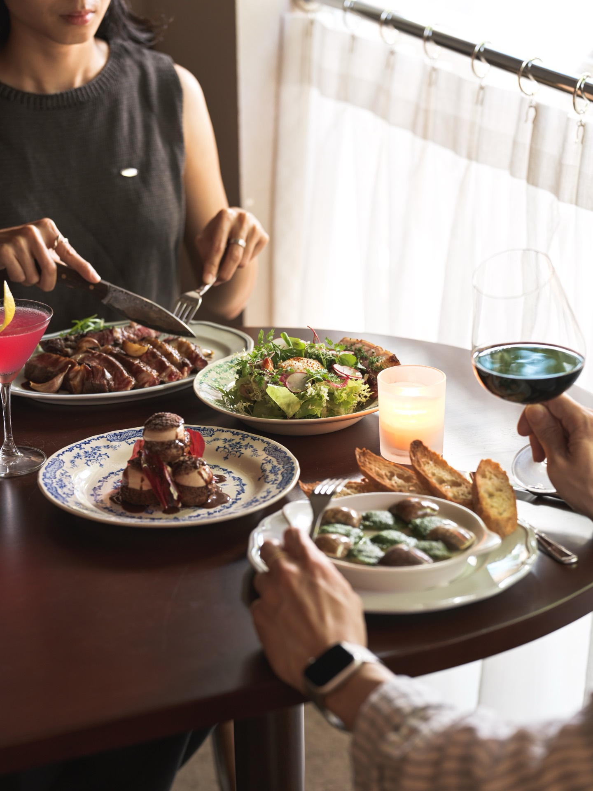

Chaud Doux 由態芮（Taïrroir）米其林三星主廚何順凱監製，林庭右（Leo）主廚掌勺——畢業於保羅・博古斯廚藝學院，旅法期間歷練多家米其林星級餐廳，將里昂 Bouchon 小館文化，原原本本地留在台北民生東路的巷弄裡。
法文的溫暖與溫柔，唸起來也神似台語「相堵」——相遇之意。這是一間希望你不小心走進來，就想留下來的餐館。
認識主廚與故事春夏新菜單，法式經典架構融入台灣當令食材，招牌菜色包括紐西蘭帶骨小牛排、澳洲和牛臀上蓋，與紅豆舒芙蕾。

南法茄泥、綠胡椒醬汁，屬於法國家庭餐桌的經典風味。

炭火直烤，佐龍蒿風味伯納西醬，是林庭右主廚的招牌手路菜。

台灣紅豆餅為靈感，佐諾曼第焦糖鹹奶油，出爐即上桌的當下美味。

從入口的老樹與黃銅招牌開始，室內延續同樣的溫度——藤編椅、墨綠沙發卡座、暖黃燈光，讓法式餐酒館的優雅，落地成台北日常可以走進來的地方。
店內設有專屬甜點主廚與侍酒師，午晚餐皆可單點，適合兩人小酌，也適合多人聚餐。
民生東路三段113巷6弄11號
晚間 週二至週日 18:00–21:30（最後點餐 20:00）
午間 週四至週日 12:00–14:30（最後點餐 13:00）
週一公休
service@chaud-doux.com